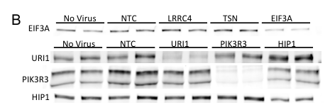

P3R3URF (PIK3R3 upstream open reading frame protein; UniProt A0A087WWA1, 95 aa; HGNC:53451) is a putative microprotein encoded by an upstream open reading frame located on the PIK3R3 locus. It has been hypothesized to give rise to a P3R3URF-PIK3R3 readthrough/fusion product, but the only directly relevant experimental study (Tidball et al. 2023, bioRxiv) failed to detect P3R3URF or P3R3URF-PIK3R3 transcripts by qRT-PCR in human iNeurons and instead favored a post-translational modification of canonical PIK3R3 as the explanation for a higher-molecular-weight immunoblot band. No P3R3URF-specific biochemical activity, cellular localization, binding partner, or pathway role has been established. Functional annotation should therefore not extrapolate from canonical PIK3R3 (p55gamma) PI3K/AKT/mTOR biology to P3R3URF.
| GO Term | Evidence | Action | Reason |
|---|---|---|---|
|
GO:0019221
cytokine-mediated signaling pathway
|
IBA
GO_REF:0000033 |
REMOVE |
Summary: PANTHER IBA annotation to cytokine-mediated signaling pathway, propagated from family PTN008494619. This pathway role is plausible only by analogy to canonical PIK3R3 (p55gamma), which is a PI3K regulatory subunit acting downstream of cytokine receptors. There is no direct experimental evidence that P3R3URF itself participates in cytokine signaling; the deep-research review found no detectable P3R3URF transcripts in the one relevant experimental study and no demonstrated biochemical or signaling activity for the uORF product.
Reason: P3R3URF is a putative upstream-ORF microprotein with no demonstrated protein product, localization, or signaling activity. The IBA propagation appears to conflate P3R3URF with canonical PIK3R3 biology. Pathway conclusions from the only relevant experimental study should be attributed to PIK3R3, not P3R3URF.
Supporting Evidence:
UniProt:A0A087WWA1
GO; GO:0019221; P:cytokine-mediated signaling pathway; IBA:GO_Central.
file:human/P3R3URF/P3R3URF-deep-research-falcon.md
Tidball et al. report a higher-molecular-weight band on a PIK3R3 immunoblot that "fit with a known fusion readthrough protein from an open reading frame upstream of PIK3R3 called P3R3URF." ... the same study performed qRT-PCR assays intended to detect PIK3R3, P3R3URF-PIK3R3, and P3R3URF transcripts and reports that they only found detectable transcript for PIK3R3, leading them to interpret the second band as "possibly a post-translational modification."
file:human/P3R3URF/P3R3URF-deep-research-falcon.md
No pathway can be attributed to P3R3URF specifically with current evidence. ... because P3R3URF transcripts were not detected, these results should be interpreted as PIK3R3 biology rather than P3R3URF biology.
|
|
GO:0003674
molecular_function
|
ND | NEW |
Summary: Root molecular_function term reflects total absence of experimentally
defined molecular activity for P3R3URF. The falcon deep-research
confirms that no peptide-level mass spectrometry identification,
no Ribo-seq translation evidence with proper handling of multi-mapping
reads, and no biochemical activity assays specifically attributable
to P3R3URF exist in the accessible literature. Evidence type ND
(No biological Data available) per PR #775 review feedback — this is
a curator-proposed root-term annotation for unknown function, not a
computationally-inferred IEA.
Reason: Molecular function genuinely unknown; no experimentally defined activity for this putative microprotein.
Supporting Evidence:
file:human/P3R3URF/P3R3URF-deep-research-falcon.md
Primary function: Unknown in the accessible corpus. The only P3R3URF-relevant study investigated whether a PIK3R3 immunoblot band could represent a P3R3URF readthrough product but did not detect P3R3URF transcripts and did not establish any P3R3URF-specific activity.
file:human/P3R3URF/P3R3URF-deep-research-falcon.md
the study does not provide: Direct demonstration of an expressed P3R3URF peptide/protein (e.g., mass spectrometry identification of a P3R3URF-unique peptide). ... Cellular localization (cytoplasm, nucleus, membranes, organelles) for a P3R3URF product. ... A biochemical function (enzyme activity, binding partners) specifically attributable to P3R3URF.
|
Q: Is the P3R3URF ORF translated into a stable peptide in any human tissue or cell condition, as judged by ribosome profiling with proper multi-mapping handling and by mass spectrometry with stringent FDR control?
Q: If a P3R3URF peptide exists, does it act independently or only as the N-terminal extension of a P3R3URF-PIK3R3 readthrough fusion, and what is its subcellular localization?
Q: Does the P3R3URF uORF regulate translation or stability of canonical PIK3R3 mRNA, independent of producing a peptide product?
Experiment: Targeted Ribo-seq plus translation initiation site profiling at the PIK3R3 locus using a pipeline such as Rp3 that controls for multi-mapping short reads, in tissues with high PIK3R3 expression (e.g. brain, lymphoid tissue).
Experiment: Immunoprecipitation/mass spectrometry using antibodies or epitope tags specific to the P3R3URF N-terminal sequence (distinct from PIK3R3) to directly identify P3R3URF-unique tryptic peptides with at least two PSMs at <1% FDR.
Experiment: CRISPR base editing or precise deletion of the P3R3URF start codon and/or stop codon without altering the PIK3R3 coding sequence, followed by quantitative measurement of PIK3R3 mRNA and protein levels and downstream PI3K/AKT/mTOR signaling, to distinguish uORF-mediated translational regulation from microprotein production.
The research report should be a detailed narrative explaining the function, biological processes, and localization of the gene product. Citations should be given for all claims.
You should prioritize authoritative reviews and primary scientific literature when conducting research. You can supplement
this with annotations you find in gene/protein databases, but these can be outdated or inaccurate.
We are specifically interested in the primary function of the gene - for enzymes, what reaction is catalyzed, and what is the substrate specificity? For transporters, what is the substrate? For structural proteins or adapters, what is the broader structural role? For signaling molecules, what is the role in the pathway.
We are interested in where in or outside the cell the gene product carries out its function.
We are also interested in the signaling or biochemical pathways in which the gene functions. We are less interested in broad pleiotropic effects, except where these elucidate the precise role.
Include evidence where possible. We are interested in both experimental evidence as well as inference from structure, evolution, or bioinformatic analysis. Precise studies should be prioritized over high-throughput, where available.
P3R3URF is described in the available tool-retrieved literature as an upstream open reading frame (uORF)/readthrough-associated entity located upstream of the canonical human gene PIK3R3. However, direct, P3R3URF-specific functional evidence is very limited in the accessible corpus: one study explicitly tested whether a higher-molecular-weight PIK3R3 immunoblot band reflected a P3R3URF–PIK3R3 readthrough product and found no detectable P3R3URF or P3R3URF–PIK3R3 transcripts by qRT-PCR in their neuronal model, favoring an alternative explanation (post-translational modification) for the band. Therefore, most downstream pathway conclusions from that study should be attributed to canonical PIK3R3 (p55γ) rather than P3R3URF. (tidball2023genomewidecrispriscreen pages 8-10, tidball2023genomewidecrispriscreen media aed70475)
Because of this evidence gap, the most defensible “functional annotation” at present is:
1) Identity: a putative uORF/readthrough-related product upstream of PIK3R3, distinct from PIK3R3 itself. (tidball2023genomewidecrispriscreen pages 8-10)
2) Evidence status: not robustly detected at transcript level in at least one relevant human neuronal system; no direct localization or biochemical activity data in the accessible sources. (tidball2023genomewidecrispriscreen pages 8-10)
3) Interpretation: if biologically relevant, P3R3URF may act primarily through uORF-mediated translational regulation or via a low-abundance/conditionally expressed peptide, consistent with broader 2023–2024 uORF and noncanonical ORF literature. (dasgupta2024upstreamopenreading pages 1-1, rodriguez2024evidenceforwidespread pages 1-1, yang2024widespreadstablenoncanonical pages 4-5)
In a genome-wide CRISPRi screen in human induced neurons (iNeurons), Tidball et al. report a higher-molecular-weight band on a PIK3R3 immunoblot that “fit with a known fusion readthrough protein from an open reading frame upstream of PIK3R3 called P3R3URF.” (bioRxiv preprint posted Dec 13, 2023; https://doi.org/10.1101/2023.12.13.571474). (tidball2023genomewidecrispriscreen pages 8-10)
Critically, the same study performed qRT-PCR assays intended to detect PIK3R3, P3R3URF–PIK3R3, and P3R3URF transcripts and reports that they only found detectable transcript for PIK3R3, leading them to interpret the second band as “possibly a post-translational modification.” (tidball2023genomewidecrispriscreen pages 8-10)
Thus, within accessible literature, P3R3URF appears only as a hypothesized upstream-ORF/readthrough product linked to PIK3R3, not as a separately characterized protein with independent functional annotation. (tidball2023genomewidecrispriscreen pages 8-10)
The following table separates what is experimentally supported in the accessible corpus from what remains speculative.
| Claim/Observation | Evidence type | Quantitative result | Interpretation/limitations | Source (with DOI/URL and year) |
|---|---|---|---|---|
| Target identity check: P3R3URF is discussed in the available literature only as a putative product related to an open reading frame upstream of PIK3R3; it is not the same entity as canonical PIK3R3/p55γ | Identity verification from article text | No direct abundance value reported | Available experimental paper centers on PIK3R3 knockdown in human iNeurons and mentions P3R3URF only to test whether a higher-MW band might represent a readthrough/fusion product; this helps avoid conflating the poorly characterized uORF product with the well-studied PI3K regulatory subunit PIK3R3 | Tidball et al., bioRxiv, 2023, DOI: 10.1101/2023.12.13.571474, https://doi.org/10.1101/2023.12.13.571474 (tidball2023genomewidecrispriscreen pages 8-10) |
| P3R3URF is described as a “known fusion readthrough protein” arising from an upstream ORF relative to PIK3R3 | Literature description / inference cited by authors | None reported | This is a descriptive statement in the paper, not a direct demonstration in that study; the authors explicitly tested this possibility experimentally | Tidball et al., bioRxiv, 2023, DOI: 10.1101/2023.12.13.571474, https://doi.org/10.1101/2023.12.13.571474 (tidball2023genomewidecrispriscreen pages 8-10) |
| Canonical PIK3R3 protein is robustly reduced by on-target CRISPRi in human iNeurons | Immunoblot | 83% reduction in PIK3R3 protein | Strong evidence that the gRNA effectively knocks down canonical PIK3R3; this measurement does not by itself establish expression of P3R3URF | Tidball et al., bioRxiv, 2023, DOI: 10.1101/2023.12.13.571474, https://doi.org/10.1101/2023.12.13.571474 (tidball2023genomewidecrispriscreen pages 8-10) |
| Canonical PIK3R3 mRNA is reduced by the on-target gRNA | qRT-PCR | 70% reduction in PIK3R3 mRNA | Confirms transcript-level knockdown of canonical PIK3R3; again, this does not prove translation of P3R3URF | Tidball et al., bioRxiv, 2023, DOI: 10.1101/2023.12.13.571474, https://doi.org/10.1101/2023.12.13.571474 (tidball2023genomewidecrispriscreen pages 8-10) |
| A second, higher-molecular-weight band was observed on the PIK3R3 immunoblot and was also reduced by the PIK3R3-targeting gRNA | Immunoblot / figure inspection | Band reduced by the same approximate amount as canonical PIK3R3 (no exact % given) | The band size was considered compatible with a possible P3R3URF-related readthrough product, but the result is not definitive; altered mobility could also reflect post-translational modification of PIK3R3 | Tidball et al., bioRxiv, 2023, DOI: 10.1101/2023.12.13.571474, https://doi.org/10.1101/2023.12.13.571474 (tidball2023genomewidecrispriscreen pages 8-10, tidball2023genomewidecrispriscreen media aed70475) |
| Direct transcript testing found detectable PIK3R3, but no detectable P3R3URF-PIK3R3 or P3R3URF transcripts | qRT-PCR | Detectable transcript: PIK3R3 only; undetected: P3R3URF-PIK3R3 and P3R3URF | This is the key experimental point arguing against the higher-MW band being a readily detectable P3R3URF readthrough transcript in this system; negative qRT-PCR does not fully exclude extremely low abundance, condition-specific, or technically missed transcripts | Tidball et al., bioRxiv, 2023, DOI: 10.1101/2023.12.13.571474, https://doi.org/10.1101/2023.12.13.571474 (tidball2023genomewidecrispriscreen pages 8-10) |
| Authors’ conclusion for the higher-MW band: possibly a post-translational modification rather than the readthrough product | Interpretation of combined immunoblot + qRT-PCR | None reported | This is the study’s favored interpretation in their human iNeuron system; it remains provisional because the band was not identified by orthogonal proteomics or sequencing | Tidball et al., bioRxiv, 2023, DOI: 10.1101/2023.12.13.571474, https://doi.org/10.1101/2023.12.13.571474 (tidball2023genomewidecrispriscreen pages 8-10) |
| Functional signaling data in the study support a role for PIK3R3 (p55γ), not specifically P3R3URF, in upstream PI3K/AKT/mTOR signaling | CRISPRi functional assays (immunoblot for phospho-signaling) | PIK3R3 knockdown increased AKT phosphorylation; authors state only PIK3R3 and HIP1 affected the upstream PI3K/mTOR/S6 pathway | These pathway conclusions should be attributed to canonical PIK3R3 because the same study did not detect P3R3URF-related transcripts; functional extrapolation to P3R3URF would be unsupported | Tidball et al., bioRxiv, 2023, DOI: 10.1101/2023.12.13.571474, https://doi.org/10.1101/2023.12.13.571474 (tidball2023genomewidecrispriscreen pages 8-10, tidball2023genomewidecrispriscreen pages 12-15, tidball2023genomewidecrispriscreen pages 10-12) |
| Current experimental support for human P3R3URF (UniProt A0A087WWA1; HGNC:53451) is therefore limited/ambiguous in the available source | Evidence synthesis | One study mentions and tests for it; no positive transcript detection in that system | Best-supported statement is that P3R3URF is a putative upstream-ORF/readthrough-associated product distinguished from canonical PIK3R3; direct evidence for its independent expression, localization, or function in human cells remains lacking in the cited source | Tidball et al., bioRxiv, 2023, DOI: 10.1101/2023.12.13.571474, https://doi.org/10.1101/2023.12.13.571474 (tidball2023genomewidecrispriscreen pages 8-10) |
Table: This table summarizes what the available cited evidence does and does not support for human P3R3URF, clearly separating the putative upstream-ORF/readthrough annotation from experimentally demonstrated effects on canonical PIK3R3. It is useful for identity verification and for avoiding conflation with the PI3K regulatory subunit p55γ.
A uORF is a short open reading frame located in the 5′ untranslated region (5′ UTR; “leader sequence”) of an mRNA that initiates at a canonical AUG or non-AUG start codon and terminates upstream of—or overlapping—the main coding sequence. (dasgupta2024upstreamopenreading pages 1-1, dasgupta2024upstreamopenreading pages 1-3)
Transcriptome-wide methods have revealed ribosome occupancy outside canonical coding sequences, with uORF translation observed in upwards of ~25% of human protein-coding genes in recent summaries. (Dasgupta & Prensner, NAR Cancer, May 2024; https://doi.org/10.1093/narcan/zcae023). (dasgupta2024upstreamopenreading pages 1-1)
The dominant conceptual framework (2023–2024) is that uORFs can:
- Regulate translation of the downstream main coding sequence by capturing scanning ribosomes, altering reinitiation probability, or triggering mRNA surveillance such as nonsense-mediated decay (NMD), depending on uORF context and 5′ UTR structure. (dasgupta2024upstreamopenreading pages 3-3, dasgupta2024upstreamopenreading pages 3-4)
- In some cases, encode microproteins (small peptides/proteins) that can have biological functions; however, large-scale analyses indicate many upstream translation events may be unstable, lowly expressed, or non-functional (“noisy”) in aggregate. (rodriguez2024evidenceforwidespread pages 1-1, yang2024widespreadstablenoncanonical pages 4-5)
This duality is directly relevant to P3R3URF: the accessible evidence does not yet establish whether it corresponds to a stable protein product in specific tissues/conditions, so translational-regulatory interpretations remain plausible. (tidball2023genomewidecrispriscreen pages 8-10, rodriguez2024evidenceforwidespread pages 1-1)
Tidball et al. used CRISPRi in human iNeurons to assess regulators of mTOR/S6 signaling and included PIK3R3 among validated hits. In immunoblots for on-target knockdown, they observed:
- 83% reduction in PIK3R3 protein abundance upon on-target perturbation. (tidball2023genomewidecrispriscreen pages 8-10)
- A second higher-molecular-weight band in the PIK3R3 blot that was reduced by the same perturbation, raising the possibility of a readthrough product (P3R3URF-related). (tidball2023genomewidecrispriscreen pages 8-10)
- By qRT-PCR, PIK3R3 mRNA reduced by 70%, but P3R3URF and P3R3URF–PIK3R3 transcripts were not detected in their assay. (tidball2023genomewidecrispriscreen pages 8-10)
The immunoblot evidence (Figure 3B) supporting the existence of a second band is shown here; importantly, the authors did not validate its identity by proteomics.
Figure evidence: PIK3R3 immunoblot showing the higher band discussed as possibly P3R3URF-readthrough. (tidball2023genomewidecrispriscreen media aed70475)
From the standpoint of functional annotation for P3R3URF, the study does not provide:
- Direct demonstration of an expressed P3R3URF peptide/protein (e.g., mass spectrometry identification of a P3R3URF-unique peptide). (tidball2023genomewidecrispriscreen pages 8-10)
- Cellular localization (cytoplasm, nucleus, membranes, organelles) for a P3R3URF product. (tidball2023genomewidecrispriscreen pages 8-10)
- A biochemical function (enzyme activity, binding partners) specifically attributable to P3R3URF. (tidball2023genomewidecrispriscreen pages 8-10)
Therefore, any P3R3URF functional claims beyond “putative uORF/readthrough-associated product upstream of PIK3R3” would be speculative given the accessible evidence. (tidball2023genomewidecrispriscreen pages 8-10)
Rodriguez et al. (Nucleic Acids Research, Jul 2024; https://doi.org/10.1093/nar/gkae571) mined five large-scale proteomics datasets and searched against 3-frame translations of GENCODE 5′ UTRs.
Key quantitative results:
- They report 192 translated upstream regions (across 191 genes) supported by mass spectrometry, with 316 peptides mapped to these regions, and the majority representing in-frame N-terminal extensions (171/192). (rodriguez2024evidenceforwidespread pages 2-3, rodriguez2024evidenceforwidespread pages 5-6)
- They used stringent filtering to control false positives; at a conservative cutoff they estimated ~9–10 false positives among 316 peptides and required ≥2 PSM support per upstream region. (rodriguez2024evidenceforwidespread pages 3-4)
- They emphasize limited deep conservation for many upstream regions: “two thirds” of upstream reading frames not conserved beyond simians, and many start at non-canonical codons, supporting a model where a substantial fraction may be non-functional or “aberrant/noisy” translation, especially in cancer cell lines. (rodriguez2024evidenceforwidespread pages 1-1)
This provides an evidence-based context: even when upstream translation occurs, many events may not correspond to stable, conserved proteins, which is consistent with why a P3R3URF-like entity might be difficult to detect robustly. (rodriguez2024evidenceforwidespread pages 1-1, tidball2023genomewidecrispriscreen pages 8-10)
Yang et al. (Nature Communications, Mar 2024; https://doi.org/10.1038/s41467-024-46240-9) developed PepScore, a logistic regression model predicting the probability that a noncanonical ORF encodes a stable peptide.
Key quantitative and methodological details:
- PepScore’s major features: expected length, domain presence, and conservation (PhyloCSF), with overall reported AUROC ~0.944 and strong performance in identifying well-expressed peptides. (yang2024widespreadstablenoncanonical pages 4-5, yang2024widespreadstablenoncanonical pages 4-4)
- Using ribosome profiling across five species, they identify 58,383 noncanonical ORFs (ncORFs) in humans and report 4,812 ncORFs (13.3%) with PepScore > 0.6 (higher-confidence stability candidates). (yang2024widespreadstablenoncanonical pages 4-5, yang2024widespreadstablenoncanonical pages 1-2)
- They find noncanonical peptides are enriched for certain predicted localizations (e.g., 36.9% mitochondrial; 13.7% extracellular), indicating noncanonical products can populate diverse cellular compartments. (yang2024widespreadstablenoncanonical pages 4-5)
- They report that >80% of noncanonical peptides have low PepScores (<0.3), consistent with widespread translation that often yields unstable/undetectable products. (yang2024widespreadstablenoncanonical pages 5-6, yang2024widespreadstablenoncanonical pages 12-13)
Applied to P3R3URF: without a tool-accessible sequence record we cannot compute PepScore here, but this framework provides a state-of-the-art way to prioritize which uORF products are likely to be stable proteins versus primarily regulatory translation events. (yang2024widespreadstablenoncanonical pages 4-5, tidball2023genomewidecrispriscreen pages 8-10)
Collectively, these 2023–2024 developments explain why P3R3URF-like microproteins are challenging to validate and why negative qRT-PCR and ambiguous immunoblot bands are common in early-stage characterization. (mohsen2023microproteins—discoverystructureand pages 4-6, tidball2023genomewidecrispriscreen pages 8-10, souza2024rp3ribosomeprofilingassisted pages 3-5)
Although there are no direct P3R3URF-targeted applications in the accessible evidence, uORF/microprotein research has multiple real-world implementations that could apply if P3R3URF translation is confirmed:
1) Variant interpretation in 5′UTRs/uORFs: uORF-creating/disrupting variants can modulate protein output and may contribute to disease mechanisms, motivating inclusion of 5′UTR/uORF annotations in genomic interpretation pipelines. (dasgupta2024upstreamopenreading pages 11-12)
2) Cancer immunopeptidomics/neoantigen discovery: uORF-derived peptides can appear on HLA-I and may constitute a nontrivial fraction of the immunopeptidome (~7.5% estimate), supporting exploration of noncanonical ORFs as tumor antigens. (dasgupta2024upstreamopenreading pages 10-11)
3) Proteogenomics pipelines for biopharma cell lines and impurity detection: improvements in noncanonical ORF annotation and microprotein detection have downstream relevance to identifying unexpected peptides/proteins in production contexts and in therapeutic products (conceptual link via 2024 method papers and the general push toward expanded ORF catalogs). (souza2024rp3ribosomeprofilingassisted pages 3-5)
Dasgupta & Prensner (2024) emphasize uORFs as “new players” in gene regulation, arguing that ribosome activity in 5′ leaders is common and functionally relevant in cancer, but that systematic cancer-wide studies remain incomplete—supporting a cautious interpretation of any single uORF/microprotein candidate until validated. (dasgupta2024upstreamopenreading pages 3-4)
Rodriguez et al. (2024) argue that while translation from 5′ UTRs is widespread, many upstream regions are GC-rich, start from noncanonical codons, lack purifying selection, and are disproportionately detected in cancer cell lines—consistent with a substantial component of nonfunctional/aberrant initiation. (rodriguez2024evidenceforwidespread pages 1-1)
Yang et al. (2024) provide a complementary “stability prioritization” lens: the majority of noncanonical peptides are predicted to be low-stability (low PepScore), and they show experimentally that some peptides can be stabilized by proteasome/lysosome inhibition while very low-score peptides remain undetectable. (yang2024widespreadstablenoncanonical pages 6-8)
Applied to P3R3URF, these perspectives support an evidence-based stance that a putative P3R3URF protein product should not be assumed to exist or be stable without direct peptide-level validation. (tidball2023genomewidecrispriscreen pages 8-10, rodriguez2024evidenceforwidespread pages 1-1, yang2024widespreadstablenoncanonical pages 6-8)
Unknown in the accessible corpus. The only P3R3URF-relevant study investigated whether a PIK3R3 immunoblot band could represent a P3R3URF readthrough product but did not detect P3R3URF transcripts and did not establish any P3R3URF-specific activity. (tidball2023genomewidecrispriscreen pages 8-10)
Unknown for P3R3URF in the accessible corpus. Broader 2024 work indicates noncanonical peptides can localize to diverse compartments (e.g., mitochondrial enrichment reported for some classes), but this cannot be assigned to P3R3URF specifically without sequence- or experiment-based evidence. (yang2024widespreadstablenoncanonical pages 4-5)
No pathway can be attributed to P3R3URF specifically with current evidence. Tidball et al. show that canonical PIK3R3 knockdown affects PI3K/AKT/mTOR/S6 signaling (e.g., increased AKT phosphorylation after PIK3R3 knockdown), but because P3R3URF transcripts were not detected, these results should be interpreted as PIK3R3 biology rather than P3R3URF biology. (tidball2023genomewidecrispriscreen pages 8-10, tidball2023genomewidecrispriscreen pages 10-12)
Based on 2023–2024 methodological consensus for microproteins/uORFs, P3R3URF functional annotation would require at least one of the following types of direct evidence:
- Peptide-level identification by mass spectrometry with stringent FDR control and ideally multiple peptides or orthogonal validation (Rodriguez 2024; Mohsen 2023). (rodriguez2024evidenceforwidespread pages 3-4, mohsen2023microproteins—discoverystructureand pages 4-6)
- Ribo-seq/TIS evidence showing consistent translation initiation at the P3R3URF start with strong periodicity and mapping confidence, including strategies to handle multi-mapping reads (Rp3 highlights the importance of this). (souza2024rp3ribosomeprofilingassisted pages 3-5, souza2024rp3ribosomeprofilingassisted pages 9-10)
- Genetic perturbation specifically targeting the P3R3URF ORF without perturbing PIK3R3 coding sequence and showing a phenotype rescued by supplying the microprotein in trans (a pattern used in microprotein validation literature as summarized in reviews). (dasgupta2024upstreamopenreading pages 11-12)
References
(tidball2023genomewidecrispriscreen pages 8-10): Andrew M. Tidball, Jinghui Luo, J. Clayton Walker, Taylor N. Takla, Gemma L. Carvill, and Jack M. Parent. Genome-wide crispri screen in human ineurons to identify novel focal cortical dysplasia genes. bioRxiv, Dec 2023. URL: https://doi.org/10.1101/2023.12.13.571474, doi:10.1101/2023.12.13.571474. This article has 1 citations.
(tidball2023genomewidecrispriscreen media aed70475): Andrew M. Tidball, Jinghui Luo, J. Clayton Walker, Taylor N. Takla, Gemma L. Carvill, and Jack M. Parent. Genome-wide crispri screen in human ineurons to identify novel focal cortical dysplasia genes. bioRxiv, Dec 2023. URL: https://doi.org/10.1101/2023.12.13.571474, doi:10.1101/2023.12.13.571474. This article has 1 citations.
(dasgupta2024upstreamopenreading pages 1-1): Anwesha Dasgupta and John R. Prensner. Upstream open reading frames: new players in the landscape of cancer gene regulation. NAR Cancer, May 2024. URL: https://doi.org/10.1093/narcan/zcae023, doi:10.1093/narcan/zcae023. This article has 18 citations and is from a peer-reviewed journal.
(rodriguez2024evidenceforwidespread pages 1-1): Jose Manuel Rodriguez, Federico Abascal, Daniel Cerdán-Vélez, Laura Martínez Gómez, Jesús Vázquez, and Michael L Tress. Evidence for widespread translation of 5′ untranslated regions. Nucleic Acids Research, 52:8112-8126, Jul 2024. URL: https://doi.org/10.1093/nar/gkae571, doi:10.1093/nar/gkae571. This article has 9 citations and is from a highest quality peer-reviewed journal.
(yang2024widespreadstablenoncanonical pages 4-5): Haiwang Yang, Qianru Li, Emily K. Stroup, Sheng Wang, and Zhe Ji. Widespread stable noncanonical peptides identified by integrated analyses of ribosome profiling and orf features. Nature Communications, Mar 2024. URL: https://doi.org/10.1038/s41467-024-46240-9, doi:10.1038/s41467-024-46240-9. This article has 72 citations and is from a highest quality peer-reviewed journal.
(tidball2023genomewidecrispriscreen pages 12-15): Andrew M. Tidball, Jinghui Luo, J. Clayton Walker, Taylor N. Takla, Gemma L. Carvill, and Jack M. Parent. Genome-wide crispri screen in human ineurons to identify novel focal cortical dysplasia genes. bioRxiv, Dec 2023. URL: https://doi.org/10.1101/2023.12.13.571474, doi:10.1101/2023.12.13.571474. This article has 1 citations.
(tidball2023genomewidecrispriscreen pages 10-12): Andrew M. Tidball, Jinghui Luo, J. Clayton Walker, Taylor N. Takla, Gemma L. Carvill, and Jack M. Parent. Genome-wide crispri screen in human ineurons to identify novel focal cortical dysplasia genes. bioRxiv, Dec 2023. URL: https://doi.org/10.1101/2023.12.13.571474, doi:10.1101/2023.12.13.571474. This article has 1 citations.
(dasgupta2024upstreamopenreading pages 1-3): Anwesha Dasgupta and John R. Prensner. Upstream open reading frames: new players in the landscape of cancer gene regulation. NAR Cancer, May 2024. URL: https://doi.org/10.1093/narcan/zcae023, doi:10.1093/narcan/zcae023. This article has 18 citations and is from a peer-reviewed journal.
(dasgupta2024upstreamopenreading pages 3-3): Anwesha Dasgupta and John R. Prensner. Upstream open reading frames: new players in the landscape of cancer gene regulation. NAR Cancer, May 2024. URL: https://doi.org/10.1093/narcan/zcae023, doi:10.1093/narcan/zcae023. This article has 18 citations and is from a peer-reviewed journal.
(dasgupta2024upstreamopenreading pages 3-4): Anwesha Dasgupta and John R. Prensner. Upstream open reading frames: new players in the landscape of cancer gene regulation. NAR Cancer, May 2024. URL: https://doi.org/10.1093/narcan/zcae023, doi:10.1093/narcan/zcae023. This article has 18 citations and is from a peer-reviewed journal.
(rodriguez2024evidenceforwidespread pages 2-3): Jose Manuel Rodriguez, Federico Abascal, Daniel Cerdán-Vélez, Laura Martínez Gómez, Jesús Vázquez, and Michael L Tress. Evidence for widespread translation of 5′ untranslated regions. Nucleic Acids Research, 52:8112-8126, Jul 2024. URL: https://doi.org/10.1093/nar/gkae571, doi:10.1093/nar/gkae571. This article has 9 citations and is from a highest quality peer-reviewed journal.
(rodriguez2024evidenceforwidespread pages 5-6): Jose Manuel Rodriguez, Federico Abascal, Daniel Cerdán-Vélez, Laura Martínez Gómez, Jesús Vázquez, and Michael L Tress. Evidence for widespread translation of 5′ untranslated regions. Nucleic Acids Research, 52:8112-8126, Jul 2024. URL: https://doi.org/10.1093/nar/gkae571, doi:10.1093/nar/gkae571. This article has 9 citations and is from a highest quality peer-reviewed journal.
(rodriguez2024evidenceforwidespread pages 3-4): Jose Manuel Rodriguez, Federico Abascal, Daniel Cerdán-Vélez, Laura Martínez Gómez, Jesús Vázquez, and Michael L Tress. Evidence for widespread translation of 5′ untranslated regions. Nucleic Acids Research, 52:8112-8126, Jul 2024. URL: https://doi.org/10.1093/nar/gkae571, doi:10.1093/nar/gkae571. This article has 9 citations and is from a highest quality peer-reviewed journal.
(yang2024widespreadstablenoncanonical pages 4-4): Haiwang Yang, Qianru Li, Emily K. Stroup, Sheng Wang, and Zhe Ji. Widespread stable noncanonical peptides identified by integrated analyses of ribosome profiling and orf features. Nature Communications, Mar 2024. URL: https://doi.org/10.1038/s41467-024-46240-9, doi:10.1038/s41467-024-46240-9. This article has 72 citations and is from a highest quality peer-reviewed journal.
(yang2024widespreadstablenoncanonical pages 1-2): Haiwang Yang, Qianru Li, Emily K. Stroup, Sheng Wang, and Zhe Ji. Widespread stable noncanonical peptides identified by integrated analyses of ribosome profiling and orf features. Nature Communications, Mar 2024. URL: https://doi.org/10.1038/s41467-024-46240-9, doi:10.1038/s41467-024-46240-9. This article has 72 citations and is from a highest quality peer-reviewed journal.
(yang2024widespreadstablenoncanonical pages 5-6): Haiwang Yang, Qianru Li, Emily K. Stroup, Sheng Wang, and Zhe Ji. Widespread stable noncanonical peptides identified by integrated analyses of ribosome profiling and orf features. Nature Communications, Mar 2024. URL: https://doi.org/10.1038/s41467-024-46240-9, doi:10.1038/s41467-024-46240-9. This article has 72 citations and is from a highest quality peer-reviewed journal.
(yang2024widespreadstablenoncanonical pages 12-13): Haiwang Yang, Qianru Li, Emily K. Stroup, Sheng Wang, and Zhe Ji. Widespread stable noncanonical peptides identified by integrated analyses of ribosome profiling and orf features. Nature Communications, Mar 2024. URL: https://doi.org/10.1038/s41467-024-46240-9, doi:10.1038/s41467-024-46240-9. This article has 72 citations and is from a highest quality peer-reviewed journal.
(dasgupta2024upstreamopenreading pages 10-11): Anwesha Dasgupta and John R. Prensner. Upstream open reading frames: new players in the landscape of cancer gene regulation. NAR Cancer, May 2024. URL: https://doi.org/10.1093/narcan/zcae023, doi:10.1093/narcan/zcae023. This article has 18 citations and is from a peer-reviewed journal.
(souza2024rp3ribosomeprofilingassisted pages 3-5): Eduardo Vieira de Souza, Angie L. Bookout, Christopher A. Barnes, Brendan Miller, Pablo Machado, Luiz A. Basso, Cristiano V. Bizarro, and Alan Saghatelian. Rp3: ribosome profiling-assisted proteogenomics improves coverage and confidence during microprotein discovery. Nature Communications, Aug 2024. URL: https://doi.org/10.1038/s41467-024-50301-4, doi:10.1038/s41467-024-50301-4. This article has 18 citations and is from a highest quality peer-reviewed journal.
(souza2024rp3ribosomeprofilingassisted pages 2-3): Eduardo Vieira de Souza, Angie L. Bookout, Christopher A. Barnes, Brendan Miller, Pablo Machado, Luiz A. Basso, Cristiano V. Bizarro, and Alan Saghatelian. Rp3: ribosome profiling-assisted proteogenomics improves coverage and confidence during microprotein discovery. Nature Communications, Aug 2024. URL: https://doi.org/10.1038/s41467-024-50301-4, doi:10.1038/s41467-024-50301-4. This article has 18 citations and is from a highest quality peer-reviewed journal.
(souza2024rp3ribosomeprofilingassisted pages 5-7): Eduardo Vieira de Souza, Angie L. Bookout, Christopher A. Barnes, Brendan Miller, Pablo Machado, Luiz A. Basso, Cristiano V. Bizarro, and Alan Saghatelian. Rp3: ribosome profiling-assisted proteogenomics improves coverage and confidence during microprotein discovery. Nature Communications, Aug 2024. URL: https://doi.org/10.1038/s41467-024-50301-4, doi:10.1038/s41467-024-50301-4. This article has 18 citations and is from a highest quality peer-reviewed journal.
(mohsen2023microproteins—discoverystructureand pages 4-6): Jessica J. Mohsen, Alina A. Martel, and Sarah A. Slavoff. Microproteins—discovery, structure, and function. PROTEOMICS, Aug 2023. URL: https://doi.org/10.1002/pmic.202100211, doi:10.1002/pmic.202100211. This article has 50 citations and is from a peer-reviewed journal.
(dasgupta2024upstreamopenreading pages 11-12): Anwesha Dasgupta and John R. Prensner. Upstream open reading frames: new players in the landscape of cancer gene regulation. NAR Cancer, May 2024. URL: https://doi.org/10.1093/narcan/zcae023, doi:10.1093/narcan/zcae023. This article has 18 citations and is from a peer-reviewed journal.
(yang2024widespreadstablenoncanonical pages 6-8): Haiwang Yang, Qianru Li, Emily K. Stroup, Sheng Wang, and Zhe Ji. Widespread stable noncanonical peptides identified by integrated analyses of ribosome profiling and orf features. Nature Communications, Mar 2024. URL: https://doi.org/10.1038/s41467-024-46240-9, doi:10.1038/s41467-024-46240-9. This article has 72 citations and is from a highest quality peer-reviewed journal.
(souza2024rp3ribosomeprofilingassisted pages 9-10): Eduardo Vieira de Souza, Angie L. Bookout, Christopher A. Barnes, Brendan Miller, Pablo Machado, Luiz A. Basso, Cristiano V. Bizarro, and Alan Saghatelian. Rp3: ribosome profiling-assisted proteogenomics improves coverage and confidence during microprotein discovery. Nature Communications, Aug 2024. URL: https://doi.org/10.1038/s41467-024-50301-4, doi:10.1038/s41467-024-50301-4. This article has 18 citations and is from a highest quality peer-reviewed journal.
(souza2024rp3ribosomeprofilingassisted pages 1-2): Eduardo Vieira de Souza, Angie L. Bookout, Christopher A. Barnes, Brendan Miller, Pablo Machado, Luiz A. Basso, Cristiano V. Bizarro, and Alan Saghatelian. Rp3: ribosome profiling-assisted proteogenomics improves coverage and confidence during microprotein discovery. Nature Communications, Aug 2024. URL: https://doi.org/10.1038/s41467-024-50301-4, doi:10.1038/s41467-024-50301-4. This article has 18 citations and is from a highest quality peer-reviewed journal.

(www.genecards.org) (www.genecards.org)P3R3URF (UniProt A0A087WWA1), short for “PIK3R3 Upstream Open Reading Frame,” is a recently annotated human gene encoding a microprotein of about 95 amino acids (~11 kDa). It is located on chromosome 1p34.1, immediately upstream of the PIK3R3 gene, which encodes the p55γ regulatory subunit of phosphoinositide 3-kinase (PI3K). Notably, P3R3URF is transcribed as a small two-exon mRNA and classified as a protein-coding gene (www.proteinatlas.org) (www.genecards.org). Early database annotations predicted that P3R3URF is involved in cell signaling – for example, the Alliance of Genome Resources links it to cytokine-mediated signaling pathways (www.genecards.org). A distinctive feature of this locus is the existence of a naturally occurring readthrough transcript that splices P3R3URF and PIK3R3 together, producing a fused protein containing the entire P3R3URF peptide at the N-terminus of p55γ (www.genecards.org). This implies that P3R3URF may function either as an independent microprotein or as an N-terminal extension of the PI3K p55γ subunit in certain transcripts. Given its recent discovery, P3R3URF’s biological role is still being elucidated through integrative computational analyses and emerging experimental data. Below, we summarize current knowledge on its function, processes, localization, and pathway involvement, drawing from up-to-date genomic annotations and the latest research on small open reading frame-encoded proteins.
P3R3URF is predicted to act as a regulatory or adaptor protein within the PI3K signaling pathway. In particular, genomic resources have attributed to it a “1-phosphatidylinositol-3-kinase regulator activity,” suggesting it may modulate the activity of PI3K enzymes (www.proteinatlas.org). This prediction stems from its genomic context: P3R3URF lies in the 5′ region of PIK3R3, a gene encoding the p55γ regulatory subunit of class I(A) PI3-kinases. Regulatory subunits like p55γ bind and stabilize the p110 catalytic subunit of PI3K and recruit it to activated receptors, thus controlling PI3K signaling intensity. By analogy, the 95-aa P3R3URF product could influence PI3K in one of two ways: (1) as an independent small protein that interacts with components of the PI3K complex, or (2) as part of a fusion protein that extends p55γ’s N-terminus (www.genecards.org). The latter scenario is supported by RefSeq-cataloged transcripts showing an in-frame readthrough between the upstream ORF and PIK3R3, yielding a larger p55γ variant containing the P3R3URF sequence (www.genecards.org). Importantly, the Uniprot/Swiss-Prot entry for P3R3URF confirms the protein’s existence at the protein level (evidence category PE1) (www.genecards.org), implying that this microprotein (or the fused isoform) has been detected in biological samples (e.g. by mass spectrometry). No classical enzyme active sites or domains have been identified in the 95-aa sequence so far – for instance, P3R3URF lacks known catalytic motifs and is not an enzyme. Instead, its size and context point to a role as a signaling modulator or scaffold. Supporting this, P3R3URF is predicted to be part of the phosphatidylinositol 3-kinase complex (www.proteinatlas.org), meaning it might bind PI3K subunits or associated proteins. This could make P3R3URF functionally analogous to the other PI3K regulatory subunits (p85α, p85β, p55γ, etc.), albeit dramatically smaller in size. Indeed, the KEGG database assigns the P3R3URF-PIK3R3 fusion the same orthology ID as PI3K regulatory subunits and places it in many PI3K-dependent signaling pathways (www.kegg.jp) (www.kegg.jp). In line with this, one inference is that P3R3URF might help tether the p110 catalytic unit in specific cellular contexts or compete with full-length p55γ for binding sites, thus fine-tuning PI3K activity. It is worth noting that no unique conserved domains (such as SH2 or SH3 domains common to p85/p55) have been annotated in P3R3URF’s sequence, indicating it may employ a short linear motif or an intrinsically disordered region to exert its effects. This kind of mechanism is plausible given emerging evidence that microproteins often lack large domains yet still bind larger proteins via short motifs (pmc.ncbi.nlm.nih.gov) (pmc.ncbi.nlm.nih.gov). In summary, while direct biochemical characterization is lacking, current models propose that P3R3URF is a micro-regulator of PI3K, potentially influencing how the PI3K enzyme complex is activated by upstream signals. Experimental validation (e.g. co-immunoprecipitation to test P3R3URF–p110 binding, or gene knockout to assess signaling changes) has yet to be published, so these functions remain predictions to be tested.
Because of its putative role in PI3K regulation, P3R3URF is linked to key cellular signaling pathways that rely on PI3K-Akt signaling. The Alliance of Genome Resources notes that P3R3URF is “predicted to be involved in the phosphatidylinositol phosphate biosynthetic process,” i.e. the generation of phosphatidylinositol 3,4,5-trisphosphate (PIP3) by PI3K (www.proteinatlas.org). This activity lies at the heart of the PI3K/Akt pathway, a central signaling cascade controlling cell growth, survival, metabolism, and proliferation. Accordingly, pathway databases (such as KEGG) include P3R3URF (via the readthrough product) in a broad array of signaling processes that engage PI3K. For example, KEGG lists P3R3URF-PIK3R3 as a component in insulin signaling, mTOR signaling, EGFR/RTK signaling, and various immune cell receptor pathways (www.kegg.jp) (www.kegg.jp). In these contexts, the PI3K complex acts downstream of activated receptors (insulin receptor, growth factor receptors, cytokine receptors, T/B-cell antigen receptors, etc.), converting PIP2 to PIP3 and triggering Akt and other effectors. By extension, the presence or absence of the P3R3URF subunit could modulate the efficiency or timing of PIP3 production. It is intriguing that the Gene Ontology (GO) annotation (2018–2025) for P3R3URF also included involvement in “cytokine-mediated signaling” (www.ncbi.nlm.nih.gov) – a broad category consistent with PI3K’s role in mediating signals from cytokine receptors (which often activate PI3K via adaptor proteins like IRS1/2). This suggests that P3R3URF might influence how cells respond to external growth factors or cytokines, potentially by altering PI3K activation dynamics.
Crucially, because PI3K-Akt signaling has many downstream branches, any regulatory factor in this pathway could have pleiotropic effects. However, to focus on P3R3URF’s precise role, it’s useful to consider the specific function of its host gene PIK3R3. The p55γ subunit encoded by PIK3R3 helps recruit the p110 catalytic subunit to phosphotyrosine sites on activated receptors (via its SH2 domains) and maintains p110 in an inhibited state until signaling is triggered. If the P3R3URF microprotein integrates into the PI3K complex, it might alter these interactions. For instance, it could provide an alternative interface or modify the existing p55γ interface with receptors or p110. One hint of a specialized role comes from the observation that p55γ’s normal N-terminus (first 24 amino acids) binds the Retinoblastoma protein (Rb) and can induce cell cycle arrest (pmc.ncbi.nlm.nih.gov) – a unique function not shared by other PI3K subunits. An extended isoform containing P3R3URF would lengthen or replace this N-terminal region, possibly changing the binding spectrum of p55γ. Thus, P3R3URF might imbue the PI3K complex with new protein–protein interactions or regulatory inputs that are context-dependent. The breadth of pathways listing P3R3URF-PIK3R3 (from immune cell activation to metabolic regulation (www.kegg.jp) (www.kegg.jp)) underscores that if P3R3URF alters PI3K function even subtly, it could ripple out to affect processes like glucose uptake (insulin response), cell survival/apoptosis, cytoskeletal rearrangements, and other PI3K-governed biology. It is important to stress, however, that no direct phenotypic studies of P3R3URF have been published to date. There are as yet no specific knockdown/knockout experiments or clinical associations reported for this gene. Thus, any assignment to pathways is based on inferred homology and network analysis. As research progresses, targeted studies will be needed to confirm which signaling outputs (Akt phosphorylation, downstream gene expression, etc.) are measurably impacted by P3R3URF. Developing such evidence will clarify whether P3R3URF’s primary role is a cis-acting peptide that tunes translation of PIK3R3 (as some uORF-encoded peptides do (pmc.ncbi.nlm.nih.gov)), or a bona fide trans-acting signal modulator that participates in PI3K signaling complexes. Given the emerging appreciation that even recently evolved microproteins can engage in vital biological processes (pmc.ncbi.nlm.nih.gov) (pmc.ncbi.nlm.nih.gov), P3R3URF represents a new piece in the PI3K puzzle that may refine our understanding of this critical pathway.
Tissue expression data indicate that P3R3URF is expressed in a highly specific manner. RNA profiling from the Human Protein Atlas shows that P3R3URF is enriched in the testis, particularly in the spermatid stage of developing sperm cells (www.proteinatlas.org). Single-cell RNA sequencing clusters P3R3URF with late spermatids, suggesting markedly elevated expression during spermatogenesis, while expression in most other tissues is minimal or undetectable (www.proteinatlas.org). This testis-specific pattern is noteworthy: many newly identified microproteins and unannotated ORFs tend to have restricted expression in reproductive or neuronal tissues, which are known to express a wide variety of unique transcripts. The functional implication is that P3R3URF might play a role in germ cell development or sperm function, possibly by modulating PI3K signals in spermatogenic cells (PI3K pathways are indeed active in testis for processes like cell survival and differentiation). However, without direct experimental evidence, this connection remains speculative. The testis bias does highlight that any phenotypes from P3R3URF disruption might be most readily observed in reproductive biology (for example, fertility or sperm abnormalities), rather than in ubiquitous processes. It’s also consistent with the idea that P3R3URF could be a recently evolved regulatory module – testis is often a “hotbed” for the expression of young or lineage-specific genes that may confer subtle advantages in reproduction (pmc.ncbi.nlm.nih.gov) (pmc.ncbi.nlm.nih.gov). Beyond the testis, P3R3URF mRNA is either low or absent in other examined tissues, and it has not been detected in blood plasma by proteomic assays (www.proteinatlas.org). There is no evidence that the protein is secreted or present extracellularly. In fact, sequence analysis predicts P3R3URF to be an intracellular protein with no signal peptide or transmembrane domains (www.proteinatlas.org). This is consistent with its presumptive role in intracellular signaling complexes (like PI3K, which operates at the cytosol–membrane interface). The Human Protein Atlas classifies P3R3URF among “predicted intracellular proteins” (www.proteinatlas.org), and no subcellular localization by immunocytochemistry is available yet (likely due to the lack of specific antibodies or low expression outside testis) (www.proteinatlas.org). By analogy to other PI3K regulatory subunits, the P3R3URF protein (or the fusion isoform) would reside in the cytoplasm under basal conditions and relocate to the inner surface of the plasma membrane upon receptor stimulation. In activated cells, PI3K regulatory subunits bind phosphotyrosine motifs on receptors or adaptors at the membrane, bringing the p110 catalytic subunit to its substrate (PIP2 in the membrane). If P3R3URF associates with the PI3K complex, it would likely follow this movement. To date, no direct microscopy or fractionation data have pinpointed P3R3URF’s location, so this remains an inference. Summarily, P3R3URF is an intracellular, cytosolic protein with a highly restricted expression pattern (testis-enriched), reinforcing the notion that its role might be specialized and context-dependent.
Research on P3R3URF specifically is still in its infancy, but its discovery ties into a broader trend in genomics and proteomics: the identification of small ORF-encoded microproteins and their hidden roles in cells. Until recently, proteins under ~100 amino acids were often missed in annotations. Large-scale studies in the last few years have revealed thousands of previously unrecognized microproteins across the human genome (pmc.ncbi.nlm.nih.gov) (pmc.ncbi.nlm.nih.gov). These include upstream ORFs within known mRNA leaders, small alternative reading frames in coding genes, and peptides from long non-coding RNAs. The Mol Cell (2023) study by Chen et al., for example, cataloged over 7,200 putative human microproteins and showed that even evolutionarily young ones (lacking deep conservation) can integrate into essential cellular processes (pmc.ncbi.nlm.nih.gov) (pmc.ncbi.nlm.nih.gov). Many of these microproteins were found to form specific protein–protein interactions and modulate processes like mRNA splicing, translation, and signaling (pmc.ncbi.nlm.nih.gov) (pmc.ncbi.nlm.nih.gov). In this context, P3R3URF stands out as a tangible example of a microprotein encoded by a uORF in a known gene. It has orthologs in mouse and rat (e.g., mouse P3r3urf), indicating it is conserved at least among mammals (www.ncbi.nlm.nih.gov). This conservation (spanning human and rodent lineages) places P3R3URF among the minority (~10%) of newly identified microproteins that are not human-specific (pmc.ncbi.nlm.nih.gov), which often suggests a biologically important function was retained. Another recent theme is that some uORF-encoded peptides act in cis to regulate their own mRNAs’ translation – essentially, the act of translating the uORF can inhibit or modulate the downstream main ORF. It’s unknown if P3R3URF plays such a role for PIK3R3, but it’s an intriguing possibility. By analogy, a 2023 study discovered an upstream microprotein in the SLC35A4 gene that is translated and has a distinct function (localizing to mitochondria and regulating metabolism) without preventing the main protein’s expression (ouci.dntb.gov.ua). P3R3URF’s case is somewhat different, since an alternative transcript merges it with the main coding sequence, hinting that nature may utilize P3R3URF as an additional exon of sorts in some situations. This readthrough mechanism (documented by RefSeq in 2017 (www.genecards.org)) suggests a deliberate functional linkage: the cell might produce a p55γ variant with an extra 95-aa “extension”. If so, ongoing research might investigate whether this fusion isoform is expressed in specific tissues (perhaps in the testis, aligning with P3R3URF expression) and what functional advantages it confers. Expert commentary in the microprotein field emphasizes that these small proteins can serve as modular signaling regulators. For instance, Slavoff and colleagues have noted that micropeptides often “play with big networks,” interfacing with much larger proteins to adjust their activity (pmc.ncbi.nlm.nih.gov). Consistent with that view, P3R3URF could be a modulator of the extensive PI3K network, potentially affecting how strongly or in what context p110 is activated. As of 2024, no peer-reviewed study has specifically interrogated P3R3URF’s function via wet-lab experiments, but its annotation in curated databases (NCBI Gene, UniProt, Ensembl) as a protein-coding gene with “evidence at protein level” underscores that the scientific community recognizes it as a genuine protein-coding locus (www.genecards.org). The next steps will likely involve targeted experiments: e.g. creating a P3R3URF-knockout cell line to see if PI3K signaling or cell phenotypes change, or overexpressing a tagged P3R3URF to identify interacting partners. Given PI3K’s relevance in many diseases (cancer, diabetes, immune disorders), understanding P3R3URF could also have clinical implications. It’s conceivable that in certain cancers, the expression of P3R3URF (or the fusion isoform) might alter PI3K-driven tumor cell behavior – for instance, PIK3R3 itself is upregulated in some tumors and has been linked to enhanced cell migration and therapy resistance (www.ncbi.nlm.nih.gov), so an upstream regulator could influence those outcomes. While no direct clinical or mutational data on P3R3URF are published, researchers and databases are actively monitoring such novel genes. In sum, expert opinion in recent literature strongly advises that microproteins like P3R3URF be functionally characterized, since “many more human sORFs…have yet unknown biological roles” (pmc.ncbi.nlm.nih.gov). The discovery of P3R3URF expands the PI3K signaling paradigm, and ongoing research in the next few years is expected to clarify whether this small protein is a mere translational byproduct or a meaningful contributor to cellular signaling homeostasis.
P3R3URF (A0A087WWA1) represents a newly recognized microprotein embedded in the PI3K signaling axis. Current understanding, drawn from computational predictions and genomic context, posits that the P3R3URF gene product is an intracellular regulator of PI3K activity, potentially functioning as a tiny accessory subunit that influences the formation or activation of the PI3K complex. It likely executes this role in specific physiological settings – most prominently in the testis, where it is predominantly expressed (www.proteinatlas.org). By associating with the PI3K-Akt pathway, P3R3URF could impact fundamental processes like cell growth, survival, and metabolism, although its precise biochemical interactions remain to be demonstrated. The unique readthrough fusion of P3R3URF with the canonical p55γ subunit further suggests a built-in mechanism to augment or modulate PI3K signaling by producing an alternative isoform (www.genecards.org). While direct experimental evidence is still lacking, the weight of bioinformatic and evolutionary data supports P3R3URF as a functional protein-coding gene, not a spurious ORF. Its emergence underscores a paradigm shift in biology – an increasing appreciation that very small proteins can have discrete, yet important, functions within larger signaling networks (pmc.ncbi.nlm.nih.gov). As one authoritative review put it, many human microproteins (even those recently evolved) “engage with vital biological processes” (pmc.ncbi.nlm.nih.gov) and have been implicated in critical roles from development to disease. In the near future, focused studies on P3R3URF should reveal whether this microprotein serves as a fine-tuner of PI3K signaling, possibly offering new insights into the regulation of a pathway central to human health. With its discovery, researchers have gained a promising lead to deepen our understanding of PI3K regulation, and P3R3URF may even emerge as a novel target or biomarker if it proves to modulate pathways involved in cancer or fertility. Until such data are available, P3R3URF remains an intriguing example of the genome’s hidden complexity – a diminutive peptide potentially wielding influence in one of the cell’s major signaling circuits.
References:
Alliance of Genome Resources (2025), NCBI Gene ID:110117498 – “Predicted to be involved in cytokine-mediated signaling pathway.” (www.genecards.org)
Human Protein Atlas (2022) – P3R3URF gene summary: “Predicted to enable 1-phosphatidylinositol-3-kinase regulator activity… part of phosphatidylinositol 3-kinase complex.” (www.proteinatlas.org)
Human Protein Atlas – Expression data: “Tissue enriched (Testis); Cell type enriched (Late spermatids).” (www.proteinatlas.org)
RefSeq (2017) – “Naturally occurring readthrough between LOC110117498 and PIK3R3 encodes a fusion protein sharing sequence with each.” (www.genecards.org)
Uniprot Knowledgebase – P3R3URF entry (A0A087WWA1): protein length 95 aa; evidence at protein level (www.genecards.org).
Mol Cell 83(6):994–1011 (Mar 16, 2023) – Chen et al.: “Most sORF-encoded human microproteins emerged in primates… yet can engage in vital biological processes (cell survival, brain development, cancer).” (pmc.ncbi.nlm.nih.gov)
KEGG Pathway Database (2023) – Entry hsa:110117499 (P3R3URF-PIK3R3) mapped to PI3K/Akt signaling, insulin signaling, immune pathways, etc., via KO K02649 (class IA PI3K regulatory subunits) (www.kegg.jp) (www.kegg.jp).
Xia et al., Mol Cell Biol 23(5):1717–1725 (2003) – “The N-terminal 24 amino acids of p55γ bind Rb and induce cell cycle arrest,” highlighting unique functional motifs in the p55γ subunit (pmc.ncbi.nlm.nih.gov).
Zhang et al., Mol Cancer 24:105 (2025) – “Small open reading frame-encoded microproteins in cancer” (review) – notes widespread discovery of microproteins and their emerging functional significance (pmc.ncbi.nlm.nih.gov) (pmc.ncbi.nlm.nih.gov).
Additional data sourced from GeneCards, Ensembl, and NCBI Gene for gene structure and ortholog information (www.genecards.org) (www.ncbi.nlm.nih.gov), and from the Human Protein Atlas for protein class and blood detectability (www.proteinatlas.org) (www.proteinatlas.org).
---
id: A0A087WWA1
gene_symbol: P3R3URF
product_type: PROTEIN
taxon:
id: NCBITaxon:9606
label: Homo sapiens
description: P3R3URF (PIK3R3 upstream open reading frame protein; UniProt A0A087WWA1,
95 aa; HGNC:53451) is a putative microprotein encoded by an upstream open reading
frame located on the PIK3R3 locus. It has been hypothesized to give rise to a
P3R3URF-PIK3R3 readthrough/fusion product, but the only directly relevant experimental
study (Tidball et al. 2023, bioRxiv) failed to detect P3R3URF or P3R3URF-PIK3R3
transcripts by qRT-PCR in human iNeurons and instead favored a post-translational
modification of canonical PIK3R3 as the explanation for a higher-molecular-weight
immunoblot band. No P3R3URF-specific biochemical activity, cellular localization,
binding partner, or pathway role has been established. Functional annotation should
therefore not extrapolate from canonical PIK3R3 (p55gamma) PI3K/AKT/mTOR biology
to P3R3URF.
existing_annotations:
- term:
id: GO:0019221
label: cytokine-mediated signaling pathway
evidence_type: IBA
original_reference_id: GO_REF:0000033
review:
summary: PANTHER IBA annotation to cytokine-mediated signaling pathway, propagated
from family PTN008494619. This pathway role is plausible only by analogy
to canonical PIK3R3 (p55gamma), which is a PI3K regulatory subunit acting
downstream of cytokine receptors. There is no direct experimental evidence
that P3R3URF itself participates in cytokine signaling; the deep-research
review found no detectable P3R3URF transcripts in the one relevant experimental
study and no demonstrated biochemical or signaling activity for the uORF
product.
action: REMOVE
reason: P3R3URF is a putative upstream-ORF microprotein with no demonstrated
protein product, localization, or signaling activity. The IBA propagation
appears to conflate P3R3URF with canonical PIK3R3 biology. Pathway conclusions
from the only relevant experimental study should be attributed to PIK3R3,
not P3R3URF.
supported_by:
- reference_id: UniProt:A0A087WWA1
supporting_text: GO; GO:0019221; P:cytokine-mediated signaling pathway;
IBA:GO_Central.
- reference_id: file:human/P3R3URF/P3R3URF-deep-research-falcon.md
supporting_text: 'Tidball et al. report a higher-molecular-weight band
on a PIK3R3 immunoblot that "fit with a known fusion readthrough protein
from an open reading frame upstream of PIK3R3 called P3R3URF." ... the
same study performed qRT-PCR assays intended to detect PIK3R3, P3R3URF-PIK3R3,
and P3R3URF transcripts and reports that they only found detectable
transcript for PIK3R3, leading them to interpret the second band as
"possibly a post-translational modification."'
- reference_id: file:human/P3R3URF/P3R3URF-deep-research-falcon.md
supporting_text: 'No pathway can be attributed to P3R3URF specifically
with current evidence. ... because P3R3URF transcripts were not detected,
these results should be interpreted as PIK3R3 biology rather than P3R3URF
biology.'
- term:
id: GO:0003674
label: molecular_function
evidence_type: ND
review:
summary: |
Root molecular_function term reflects total absence of experimentally
defined molecular activity for P3R3URF. The falcon deep-research
confirms that no peptide-level mass spectrometry identification,
no Ribo-seq translation evidence with proper handling of multi-mapping
reads, and no biochemical activity assays specifically attributable
to P3R3URF exist in the accessible literature. Evidence type ND
(No biological Data available) per PR #775 review feedback — this is
a curator-proposed root-term annotation for unknown function, not a
computationally-inferred IEA.
action: NEW
reason: Molecular function genuinely unknown; no experimentally defined activity
for this putative microprotein.
supported_by:
- reference_id: file:human/P3R3URF/P3R3URF-deep-research-falcon.md
supporting_text: 'Primary function: Unknown in the accessible corpus.
The only P3R3URF-relevant study investigated whether a PIK3R3 immunoblot
band could represent a P3R3URF readthrough product but did not detect
P3R3URF transcripts and did not establish any P3R3URF-specific activity.'
- reference_id: file:human/P3R3URF/P3R3URF-deep-research-falcon.md
supporting_text: 'the study does not provide: Direct demonstration of
an expressed P3R3URF peptide/protein (e.g., mass spectrometry identification
of a P3R3URF-unique peptide). ... Cellular localization (cytoplasm,
nucleus, membranes, organelles) for a P3R3URF product. ... A biochemical
function (enzyme activity, binding partners) specifically attributable
to P3R3URF.'
references:
- id: GO_REF:0000033
title: Annotation inferences using phylogenetic trees
findings: []
- id: file:human/P3R3URF/P3R3URF-deep-research-openai.md
title: Deep research on P3R3URF function (OpenAI)
findings: []
- id: file:human/P3R3URF/P3R3URF-deep-research-falcon.md
title: Deep research on P3R3URF function (Falcon / Edison Scientific Literature)
findings:
- statement: P3R3URF is described in available literature only as a putative
upstream-ORF/readthrough-associated product distinct from canonical PIK3R3.
supporting_text: 'P3R3URF is described in the available tool-retrieved literature
as an upstream open reading frame (uORF)/readthrough-associated entity
located upstream of the canonical human gene PIK3R3. However, direct,
P3R3URF-specific functional evidence is very limited in the accessible
corpus.'
reference_section_type: ABSTRACT
- statement: In the Tidball 2023 CRISPRi study in human iNeurons, qRT-PCR
detected canonical PIK3R3 but not P3R3URF or P3R3URF-PIK3R3 transcripts;
the authors favored a post-translational modification of PIK3R3 over a
P3R3URF readthrough.
supporting_text: 'Direct transcript testing found detectable PIK3R3, but
no detectable P3R3URF-PIK3R3 or P3R3URF transcripts ... Authors'' conclusion
for the higher-MW band: possibly a post-translational modification rather
than the readthrough product.'
reference_section_type: RESULTS
- statement: Pathway conclusions from the Tidball study apply to canonical
PIK3R3, not P3R3URF.
supporting_text: 'Functional signaling data in the study support a role
for PIK3R3 (p55gamma), not specifically P3R3URF, in upstream PI3K/AKT/mTOR
signaling ... These pathway conclusions should be attributed to canonical
PIK3R3 because the same study did not detect P3R3URF-related transcripts;
functional extrapolation to P3R3URF would be unsupported.'
reference_section_type: DISCUSSION
- statement: A substantial fraction of upstream/noncanonical ORFs do not yield
stable peptides, providing context for the lack of detection of P3R3URF.
supporting_text: '>80% of noncanonical peptides have low PepScores (<0.3),
consistent with widespread translation that often yields unstable/undetectable
products.'
reference_section_type: RESULTS
- id: UniProt:A0A087WWA1
title: UniProt record for P3R3URF (A0A087WWA1) - 95 aa reviewed entry, PIK3R3
upstream open reading frame protein
findings: []
- id: doi:10.1101/2023.12.13.571474
title: 'Tidball AM et al. Genome-wide CRISPRi Screen in Human iNeurons to Identify
Novel Focal Cortical Dysplasia Genes. bioRxiv (2023-12-13).'
findings: []
aliases: [Putative uncharacterized protein P3R3URF, PIK3R3 upstream open reading
frame protein]
core_functions:
- description: Unknown. P3R3URF is a putative microprotein encoded by an upstream
open reading frame on the PIK3R3 locus; no protein product has been demonstrated
by mass spectrometry, no cellular localization is established, and no biochemical
activity or signaling role is supported by direct experimental evidence in
the accessible literature.
supported_by:
- reference_id: file:human/P3R3URF/P3R3URF-deep-research-falcon.md
supporting_text: 'Primary function: Unknown in the accessible corpus. The
only P3R3URF-relevant study investigated whether a PIK3R3 immunoblot band
could represent a P3R3URF readthrough product but did not detect P3R3URF
transcripts and did not establish any P3R3URF-specific activity.'
- reference_id: file:human/P3R3URF/P3R3URF-deep-research-falcon.md
supporting_text: 'they only found detectable transcript for PIK3R3, leading
them to interpret the second band as "possibly a post-translational modification."'
suggested_questions:
- question: Is the P3R3URF ORF translated into a stable peptide in any human tissue
or cell condition, as judged by ribosome profiling with proper multi-mapping
handling and by mass spectrometry with stringent FDR control?
- question: If a P3R3URF peptide exists, does it act independently or only as
the N-terminal extension of a P3R3URF-PIK3R3 readthrough fusion, and what
is its subcellular localization?
- question: Does the P3R3URF uORF regulate translation or stability of canonical
PIK3R3 mRNA, independent of producing a peptide product?
suggested_experiments:
- description: Targeted Ribo-seq plus translation initiation site profiling at
the PIK3R3 locus using a pipeline such as Rp3 that controls for multi-mapping
short reads, in tissues with high PIK3R3 expression (e.g. brain, lymphoid
tissue).
- description: Immunoprecipitation/mass spectrometry using antibodies or epitope
tags specific to the P3R3URF N-terminal sequence (distinct from PIK3R3) to
directly identify P3R3URF-unique tryptic peptides with at least two PSMs at
<1% FDR.
- description: CRISPR base editing or precise deletion of the P3R3URF start codon
and/or stop codon without altering the PIK3R3 coding sequence, followed by
quantitative measurement of PIK3R3 mRNA and protein levels and downstream
PI3K/AKT/mTOR signaling, to distinguish uORF-mediated translational regulation
from microprotein production.
status: COMPLETE
{kind=link}